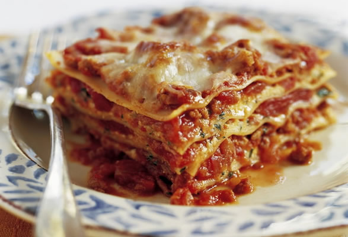

Back to Recipes List
Lasagna

Description
Lasagne are a type of wide, flat pasta, possibly one of the oldest types of pasta. Lasagne, or the singular lasagna, commonly refers to a culinary dish made with stacked layers of pasta alternated with sauces and ingredients such as meats, vegetables and cheese, and sometimes topped with melted grated cheese. Typically, the cooked pasta is assembled with the other ingredients and then baked in an oven. The resulting lasagne casserole is cut into single-serving square portions.
Ingredients
- Tomato sauce
- Lasagna noodles
- Ground beef
- Mozzarella cheese
- Parmesan cheese
- Onion
- Garlic
- Italian seasoning
- Salt
- Pepper
- Olive oil
- Carrots
Steps
- Preheat oven to 375°F (190°C).
- Heat olive oil in a large skillet over medium heat. Add onion, carrots, and garlic and cook until soft.
- Add ground beef and cook until browned. Drain excess fat.
- Add tomato sauce, Italian seasoning, salt, and pepper. Simmer for 10 minutes.
- Spread a thin layer of meat sauce in the bottom of a baking dish. Add a layer of lasagna noodles, a layer of mozzarella cheese, and a layer of Parmesan cheese. Repeat layers until all ingredients are used, ending with a layer of mozzarella cheese on top.
- Cover with aluminum foil and bake for 25 minutes. Remove foil and bake for an additional 25 minutes until cheese is bubbly and golden brown.
- Let lasagna rest for 10 minutes before serving.